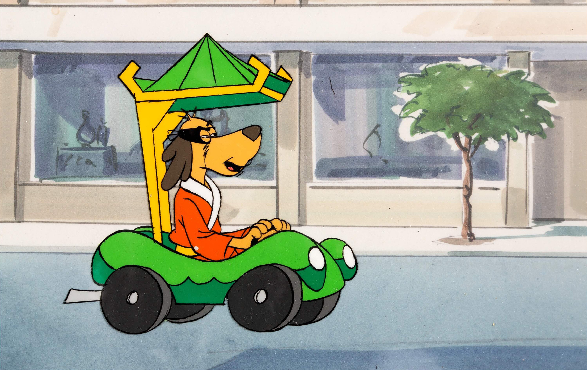

About Hong Kong Phooey
Hong Kong Phooey is a cartoon character from the 1970s. He is the secret identity of the police station janitor Penrod "Penry" Pooch. In each episode Penry jumps into a filing cabinet and emerges as Hong Kong Phooey ready to solve crimes. He is accompanied by his pet cat Spot and travels around in his Phooeymobile which can transform into a boat, a plane or a telephone booth!
Hong Kong Phooey and the Phooeymobile
Characteristics
- He's a mild mannered janitor
- He thinks he can solve crimes
- He gets helped by his pet cat, Spot
Other Characters and Actors
These are the other characters in the show, click on the links below to read more about them